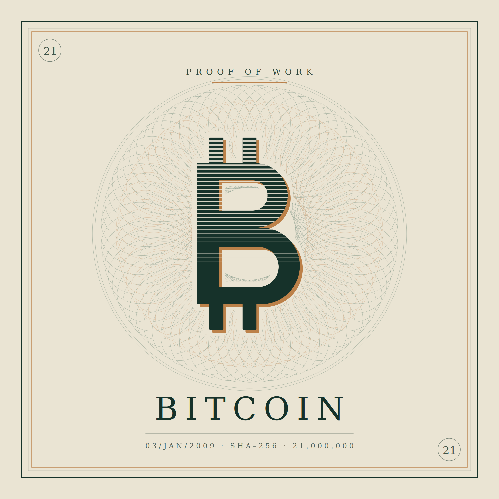

Bitcoin: When Scarcity Becomes a Mathematical Claim

Bitcoin: Proof of Work, genesis block 3 January 2009, SHA-256, 21,000,000 supply cap
Gold earns trust from geology. Nobody decided there should be a limited amount of it. The scarcity is a fact of the planet, indifferent to politics, and that indifference is precisely the source of its credibility. Bitcoin attempts something audacious: to manufacture the same indifference out of mathematics.
A supply cap no governor can revise
The supply ceiling of twenty-one million units is not a policy target that a governor can revise under pressure. It is written into the protocol and enforced by every full node that runs the software; the 21 million figure is not a separate rule but the mathematical consequence of the block reward halving by half every 210,000 blocks, roughly once every four years, a schedule fixed since Bitcoin's genesis block in January 2009 River Learn. This is the deepest claim Bitcoin makes, and it is a monetary claim rather than a technological one. It proposes that a rule enforced by distributed verification can be harder to break than a rule enforced by institutional restraint.
The cost that makes the ledger trustworthy
The resemblance to gold runs further than the supply cap. Bitcoin is also mined, and the mining is deliberately expensive. Proof of work consumed an estimated 138 terawatt-hours of electricity annually as of the Cambridge Centre for Alternative Finance's most recent industry report, roughly 0.5 percent of global electricity use, to produce something that, in itself, does nothing Cambridge CCAF. The cost is not a design flaw but the mechanism by which the ledger becomes difficult to rewrite. Just as gold's value is partly anchored in the effort required to pull it from the ground, Bitcoin's security is anchored in the energy required to extend its chain. Both systems buy trust with waste, and in both cases the waste is the point.
An instrument that stopped circulating
The behavioural parallel is just as striking. Bitcoin was introduced as electronic cash for peer-to-peer payment, yet the overwhelming majority of holders do not spend it. On-chain data from Glassnode shows that roughly 63 percent of circulating supply has not moved in at least a year Glassnode, and the share of "ancient" coins, those dormant for a decade or more, is now outpacing the arrival of newly mined supply, according to Fidelity Digital Assets' analysis of the same on-chain data Fidelity Digital Assets. They hold. The asset that was designed to circulate has become the asset that sits still, which is exactly what happened to gold across centuries. An instrument becomes a store of value at the moment people stop using it for anything else.
Where the resemblance breaks down
Where the two diverge is in the nature of the trust itself. Gold requires no counterparty and no infrastructure. A bar buried in 1850 is still a bar today, regardless of whether anyone maintained anything. Bitcoin requires a network that keeps running, electricity that keeps flowing, and a private key that has not been lost or stolen. Its independence from institutions is real, but it is not independence from conditions. The phrase trustless is misleading. Trust has not been eliminated. It has been relocated, from a central bank to an open-source protocol, and to the assumption that no coalition will ever find it profitable to attack the chain.
There is also the matter of time. Gold has functioned as a monetary focal point for thousands of years across every civilisation that encountered it, which is why its status feels less like a belief and more like a law of nature. Bitcoin has existed since 2009. Seventeen years is a long time in technology and almost nothing in monetary history. Its extreme volatility reflects that youth. An asset still discovering its own price is not yet performing the function that gold performs, however compelling its design.
Buffett's case against Bitcoin
Buffett's objection applies here with greater force, not less. At Berkshire Hathaway's 2018 annual meeting, he told shareholders Bitcoin was "probably rat poison squared" CNBC, 2018, and at the 2022 meeting he made the underlying logic plain: "If you told me you own all of the Bitcoin in the world and you offered it to me for $25, I wouldn't take it, because what would I do with it? I'd have to sell it back to you one way or another. It isn't going to do anything" CNBC, 2022. Gold at least has a floor of ornamental and industrial demand, however thin. Bitcoin has no such floor. Its entire value rests on the expectation of future demand, which is the purest possible version of the nonproductive asset he has spent decades warning against.
The counterargument worth taking seriously
Yet the counterargument deserves an honest hearing. In economies where the local currency has been eroded by fiscal indiscipline, capital controls, or outright confiscation, what matters is whether it survives, and whether it can leave the country in a memorised phrase. For a citizen of Buenos Aires or Ankara, an asset that produces nothing but cannot be inflated by a finance ministry is not an absurdity. It is a rational response to a specific institutional failure. That is the same reasoning that has always driven demand for gold, translated into a form that crosses borders at the speed of light.
Bitcoin is a wager that a rule written in code can outlast the discretion of the people who would otherwise write it, and that enough of the world will keep believing this for the belief to hold. Gold made the same wager and has been winning it for five thousand years. Bitcoin has been at the table for less than two decades. The interesting question is not whether the wager is foolish, but how long a wager must be sustained before it stops looking like a wager at all.
Bitcoin: Proof of Work, blok genesis 3 Januari 2009, SHA-256, batas pasokan 21.000.000
Emas memperoleh kepercayaan dari geologi. Tidak ada yang pernah memutuskan bahwa jumlahnya harus terbatas. Kelangkaannya adalah fakta bumi, acuh tak acuh terhadap politik, dan justru keacuhan itulah sumber kredibilitasnya. Bitcoin mencoba sesuatu yang berani: menciptakan keacuhan yang sama dari matematika.
Batas pasokan yang tak bisa direvisi gubernur mana pun
Batas pasokan sebesar dua puluh satu juta unit bukanlah target kebijakan yang bisa direvisi seorang gubernur ketika tekanan datang. Ia tertulis di dalam protokol dan ditegakkan oleh setiap full node yang menjalankan perangkat lunaknya; angka 21 juta itu sendiri bukan aturan terpisah, melainkan konsekuensi matematis dari reward blok yang berkurang separuh setiap 210.000 blok, kira-kira sekali setiap empat tahun, jadwal yang telah tetap sejak blok genesis Bitcoin pada Januari 2009 River Learn. Inilah klaim terdalam Bitcoin, dan klaim itu bersifat moneter, bukan teknologis. Ia mengajukan gagasan bahwa aturan yang ditegakkan oleh verifikasi terdistribusi bisa lebih sulit dilanggar daripada aturan yang ditegakkan oleh pengendalian diri sebuah institusi.
Biaya yang membuat catatannya bisa dipercaya
Kemiripannya dengan emas tidak berhenti pada batas pasokan. Bitcoin juga ditambang, dan penambangannya sengaja dibuat mahal. Proof of work diperkirakan membakar 138 terawatt-jam listrik per tahun menurut laporan industri terbaru Cambridge Centre for Alternative Finance, kira-kira 0,5 persen dari total pemakaian listrik dunia, untuk menghasilkan sesuatu yang, pada dirinya sendiri, tidak melakukan apa pun Cambridge CCAF. Biaya itu bukan cacat rancangan, melainkan mekanisme yang membuat catatannya sulit ditulis ulang. Sebagaimana nilai emas sebagian bersandar pada susah payahnya mengeluarkan logam itu dari perut bumi, keamanan Bitcoin bersandar pada energi yang dibutuhkan untuk memperpanjang rantainya. Kedua sistem membeli kepercayaan dengan pemborosan, dan pada keduanya pemborosan itulah intinya.
Instrumen yang berhenti beredar
Kemiripan perilakunya sama mencoloknya. Bitcoin diperkenalkan sebagai uang elektronik untuk pembayaran antarindividu, namun sebagian besar pemiliknya tidak pernah membelanjakannya. Data on-chain dari Glassnode menunjukkan bahwa sekitar 63 persen pasokan yang beredar tidak berpindah tangan setidaknya selama satu tahun Glassnode, dan porsi koin "purba", yang sudah diam sepuluh tahun atau lebih, kini melampaui laju kemunculan pasokan baru hasil penambangan, menurut analisis Fidelity Digital Assets atas data on-chain yang sama Fidelity Digital Assets. Mereka menyimpan. Aset yang dirancang untuk beredar justru berubah menjadi aset yang diam, persis seperti yang terjadi pada emas sepanjang berabad-abad. Sebuah instrumen menjelma menjadi store of value tepat pada saat orang berhenti memakainya untuk hal lain.
Titik di mana kemiripannya runtuh
Yang membedakan keduanya adalah watak dari kepercayaan itu sendiri. Emas tidak menuntut pihak lawan dan tidak menuntut infrastruktur. Sebatang emas yang dikubur pada 1850 tetap sebatang emas hari ini, terlepas dari ada tidaknya orang yang merawat apa pun. Bitcoin menuntut jaringan yang terus hidup, listrik yang terus mengalir, dan private key yang tidak hilang atau dicuri. Kemerdekaannya dari institusi memang nyata, tetapi itu bukan kemerdekaan dari syarat. Istilah trustless menyesatkan. Kepercayaan tidak dihapus. Ia hanya dipindahkan, dari bank sentral ke sebuah protokol terbuka, dan ke asumsi bahwa tidak akan pernah ada koalisi yang merasa untung menyerang rantai itu.
Lalu ada soal waktu. Emas telah berfungsi sebagai titik temu moneter selama ribuan tahun di setiap peradaban yang pernah menjumpainya, dan itulah sebabnya kedudukannya terasa bukan lagi seperti keyakinan melainkan seperti hukum alam. Bitcoin baru ada sejak 2009. Tujuh belas tahun adalah waktu yang panjang dalam teknologi dan nyaris tidak berarti dalam sejarah moneter. Volatilitasnya yang ekstrem mencerminkan usia muda itu. Aset yang masih mencari harganya sendiri belum menjalankan fungsi yang dijalankan emas, betapapun memikat rancangannya.
Argumen Buffett menolak Bitcoin
Keberatan Buffett justru berlaku lebih keras di sini, bukan lebih longgar. Pada rapat tahunan Berkshire Hathaway 2018, ia mengatakan kepada pemegang saham bahwa Bitcoin "kemungkinan besar adalah racun tikus berpangkat dua" CNBC, 2018, dan pada rapat 2022 ia menerangkan logikanya dengan telanjang: "Kalau Anda bilang saya memiliki seluruh Bitcoin di dunia dan menawarkannya kepada saya seharga 25 dolar, saya tidak akan mengambilnya, sebab apa yang bisa saya lakukan dengannya? Saya harus menjualnya kembali kepada Anda dengan satu atau lain cara. Benda itu tidak akan melakukan apa-apa" CNBC, 2022. Emas setidaknya masih punya dasar penggunaan berupa permintaan perhiasan dan industri, setipis apa pun. Bitcoin tidak punya dasar penggunaan semacam itu. Seluruh nilainya bertumpu pada harapan akan permintaan di masa depan, dan itu adalah bentuk paling murni dari aset nonproduktif yang selama puluhan tahun ia peringatkan.
Argumen sebaliknya yang layak didengar serius
Namun argumen sebaliknya layak didengar dengan jujur. Di negara-negara yang mata uangnya sudah digerus oleh indisiplin fiskal, kontrol devisa, atau perampasan terang-terangan, yang penting adalah apakah aset itu selamat, dan apakah ia bisa dibawa keluar negeri hanya dengan menghafal serangkaian kata. Bagi warga Buenos Aires atau Ankara, aset yang tidak menghasilkan apa pun tetapi tidak bisa dicairkan oleh kementerian keuangan bukanlah kemustahilan. Ia adalah jawaban rasional atas kegagalan institusional yang sangat spesifik. Itu penalaran yang sama yang sejak dulu menggerakkan permintaan terhadap emas, hanya diterjemahkan ke dalam bentuk yang melintasi perbatasan secepat cahaya.
Bitcoin adalah taruhan bahwa aturan yang ditulis dalam kode bisa berumur lebih panjang daripada diskresi orang-orang yang seharusnya menulisnya, dan bahwa cukup banyak penghuni dunia akan terus memercayainya sehingga kepercayaan itu bertahan. Emas memasang taruhan yang sama dan telah memenangkannya selama lima ribu tahun. Bitcoin baru duduk di meja itu kurang dari dua dekade. Pertanyaan yang menarik bukanlah apakah taruhan ini bodoh, melainkan berapa lama sebuah taruhan harus bertahan sebelum ia berhenti terlihat seperti taruhan.